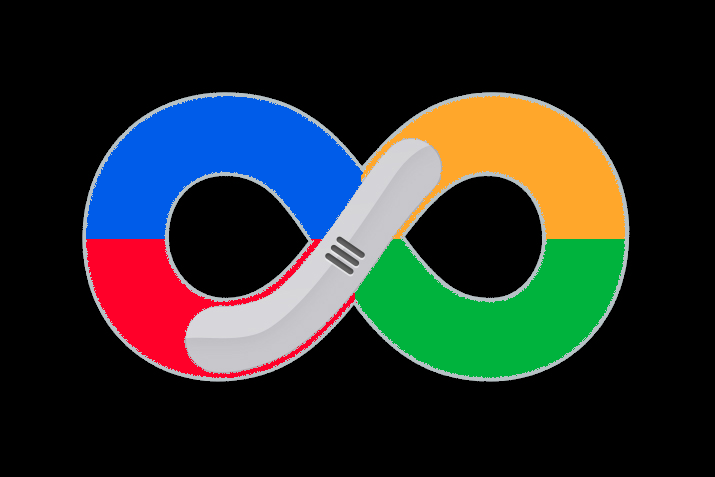

Action
Reset items
Loading view
Progress bar
Colored balls
Crazy circles
All at the same time
Parameters
Load distance
About
Eric Taix
This is an experiment (it still has some issues on FireFox and Safari) of an infinite scroller with Dart and Polymer.
This demo provides 3 loading views: click on the corresponding menu to change the view used when new lines are loaded.
You like this application ?
Say hello on twitter :
@etaix
500 lines will be loaded (20 lines per page)
{{ line }}
Chargement...
Loading...

Dart infinite scroller demo
https://github.com/eric-taix/dart_infinite_scroll